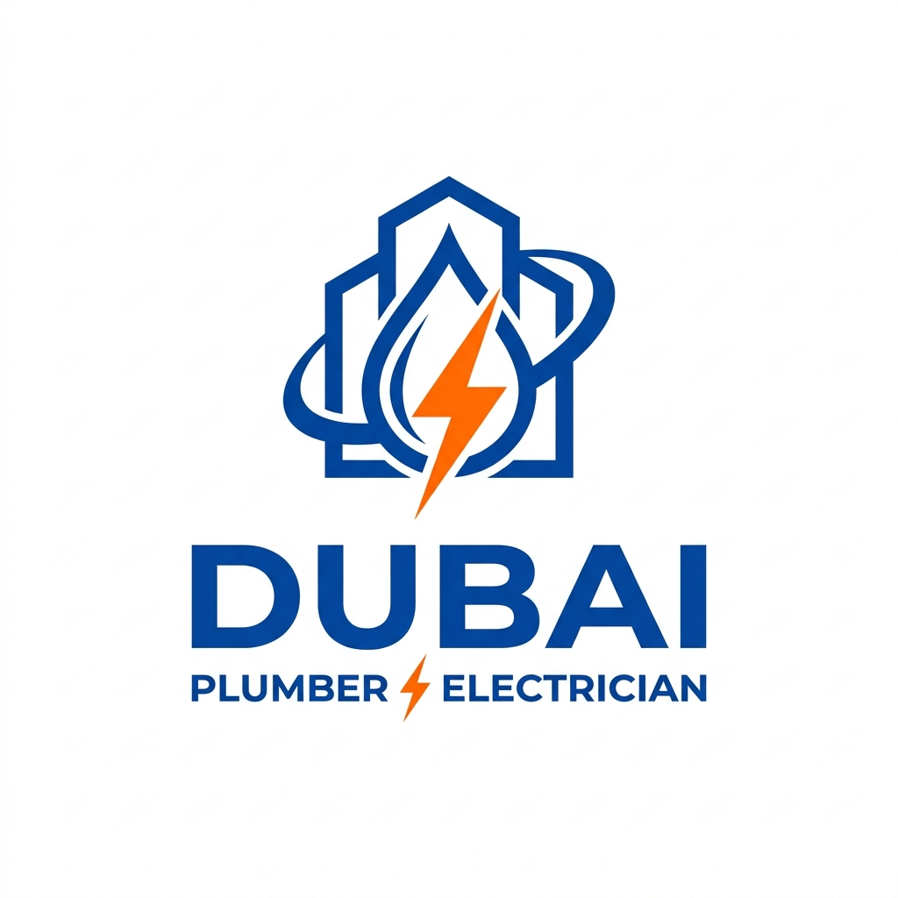

Dubai Plumber ElectricianIn a city that never sleeps, property emergencies don't wait for business hours. Whether it’s a power trip at 2 AM or a burst pipe during a Friday family gathering, having a trusted 24/7 maintenance partner is a necessity, not a luxury.
Dubai is known for its high-end real estate and ultra-modern industrial areas like Al Quoz. However, with sophisticated infrastructure comes the need for sophisticated care. The unique climatic conditions of the UAE—extreme heat, high humidity, and occasional sandstorms—accelerate the depreciation of electrical and plumbing assets. Without professional, round-the-clock support, a minor fault can transform into a total property loss in a matter of hours.
Many homeowners and business managers often hesitate to call for a repair, hoping the issue will resolve itself or waiting until the next morning to avoid "off-hour" premiums. In Dubai, this delay is financially and physically risky.
Take, for instance, a small leak in a kitchen pipe. Inside a typical Al Quoz villa or warehouse, where flooring is often stone or concrete, water doesn't just sit on the surface. It seeps into the infrastructure, damaging the foundations and, more dangerously, finding its way into electrical conduits. A plumbing leak that is not addressed immediately can lead to a catastrophic electrical short circuit within the building’s walls.
In global maintenance standards, the "Golden Hour" is an hour. In Dubai's peak summer, it is 30 minutes. If a power outage occurs and your A/C turns off, the internal temperature of a villa can rise from 24°C to 35°C in less than an hour. This not only causes distress to residents (and pets) but can also damage sensitive electronics and fine furniture. A 24/7 partner like Dubai Plumber Electrician, based centrally in Al Quoz, ensures we are at your doorstep within that critical 30-minute window.
It is tempting to hire unlicensed "freelance" handymen who advertise on community boards. However, in Dubai, the risks far outweigh the savings.
Lack of Accountability: If an unlicensed technician makes a mistake that leads to a fire or flood, they often disappear. A registered company has a physical presence (like our office in Al Quoz 4) and a reputation to maintain.
Insurance Complications: Most home insurance policies in the UAE require that maintenance and repairs be carried out by licensed professionals. If you file a claim for damage caused by an unlicensed repairman, your insurance provider is highly likely to reject the claim, leaving you with massive out-of-pocket expenses.
Specialized Tooling: Modern Dubai properties use high-tech materials like PEX piping and complex DB boards with electronic RCDs. A professional carries thousands of Dirhams worth of specialized diagnostic equipment (multimeters, thermal cameras, ultrasonic sensors) that a freelance handyman simply does not have.
Imagine being on vacation in London or Mumbai and receiving a call from your security team that there's a water leak in your Al Quoz property. Knowing that you have a pre-registered, trusted partner who already knows your property’s layout and can attend to the issue immediately is priceless.
Maintenance is not just about fixing what is broken; it is about the "Sleep Well" factor. Our 24/7 teams are background-checked, uniformed, and trained to respect the privacy and security of your home or business, even in the middle of the night.
Government bodies like DEWA set high standards for electrical and water safety. Professional maintenance companies stay up-to-date with these changing regulations. For example, recent updates to grounding and earthing standards help prevent accidents during the humid summer months. A professional ensures your property remains compliant, which is essential if you ever decide to sell or rent out the unit.
Real estate is one of the biggest investments anyone makes. A property with a verifiable history of professional maintenance maintains a much higher resale value than one with a "patchwork" of amateur repairs. We provide detailed service reports after every visit, which act as a "service history" for your home—much like the logbook of a high-end car.
Proximity matters. A "24/7" company based in Sharjah might take two hours to reach Al Quoz during traffic. We are centrally located, meaning our technician isn't just "on the way"—they are practically around the corner. Our expertise in the local Al Quoz infrastructure makes us the ideal choice for residents and industrial managers alike.
Don't wait for a crisis to find a partner. Add our number to your emergency contacts now and sleep soundly knowing we're just a call away.
Call +971 50 775 1565